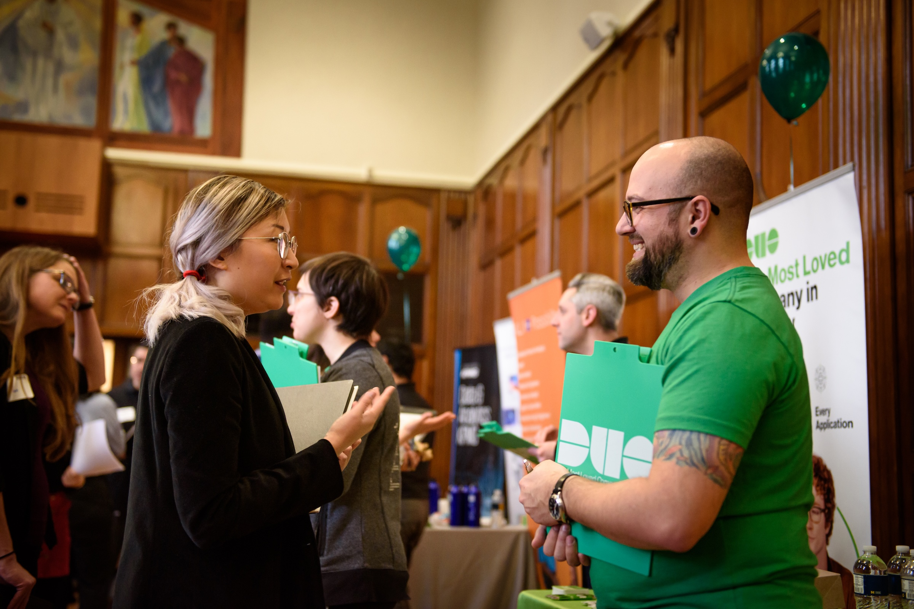

Build a Network that Opens Doors
Networking is one of the most powerful ways to discover opportunities, learn about careers, and build lasting professional relationships. Whether you’re looking to connect with alumni, peers, or professionals, this page will guide you through the process, from finding contacts to having meaningful conversations.
Need help crafting messages for outreach or choosing who to contact? You can always meet with a CDO Career Coach for personalized support.
Why Network?
Your network can open doors that online applications alone cannot. Building authentic relationships helps you:
- Learn about industries and companies firsthand.
- Gain advice tailored to your career goals.
- Discover hidden opportunities before they’re posted.
What We Offer
Popular Networking Resources To Begin Creating Connections:
- UMSI CareerLink: Access employer contacts and events.
- UMSI LinkedIn Group: Network with UMSI alumni and students.
- UMich Career Network (UCAN): Use a campus-wide networking tool.
Outreach Message Templates:
- [CDO] Networking Outreach Email Examples
- Lettersmith Templates
- ResumeWorded: Networking Email Templates for 2023
Note: Access to [CDO] Networking Outreach Email Examples will require logging in with U-M credentials
How to Network: A Step-By-Step Guide
Step 1: Find the Right People to Connect With
Start by identifying alumni and professionals who can share valuable insights or guidance. Use these trusted resources to find contacts:
- UMSI CareerLink: Search for employer contacts and join networking events.
- UMich Career Network (UCAN): Broaden your reach across campus.
- Your Personal Network: Friends, faculty, supervisors, and mentors can offer introductions or advice.
Step 2: Reach Out and Get a Response
Making that first connection can feel daunting, but remember: each response is progress! To improve your chances:
- Be concise: Respect their time with a brief, clear message.
- Personalize: Show genuine interest by referencing something specific about them.
- Make it easy: Suggest a 20-minute chat within a specific timeframe.
- Avoid asking for jobs: Focus on building relationships first — never send your resume in your initial message.
How To Write Outreach Messages That Work
Whether emailing or messaging on LinkedIn, follow this simple formula:
- Start with your connection or shared affiliation.
- Clearly state your purpose and specific ask.
- Highlight why you’re reaching out to them in particular.
- Propose a timeframe for a short chat.
- Always thank them for their time.
Outreach Message Templates:
Note: Access to [CDO] Networking Outreach Email Examples will require logging in with U-M credentials
Step 3: Have Effective Informational Interviews with TIARA
Informational interviews are informal conversations that help you learn about a career or company, without the pressure of a job interview.
Prepare by using the TIARA method, a simple way to organize your questions:
- T – Trends: Ask about industry or company developments.
- I – Insight: Learn about their daily work and experiences.
- A – Advice: Get recommendations for your career path.
- R – Resources: Request useful blogs, websites, or tools.
- A – Assignments: Find out what projects or skills add value.
End your conversation by thanking your informational interviewee and asking if you can follow up with questions later.
Networking FAQs
-
Q: How many alumni should I reach out to?
A: Aim to connect with several people to increase your chances of responses. Focus on quality and relevance. -
Q: What if I don’t get a response?
A: Don’t get discouraged! Cold outreach averages a 20% response rate. Follow up politely once, then move on. -
Q: How do I prepare for an informational interview?
A: Research the person and company, prepare TIARA questions, and practice your introduction.